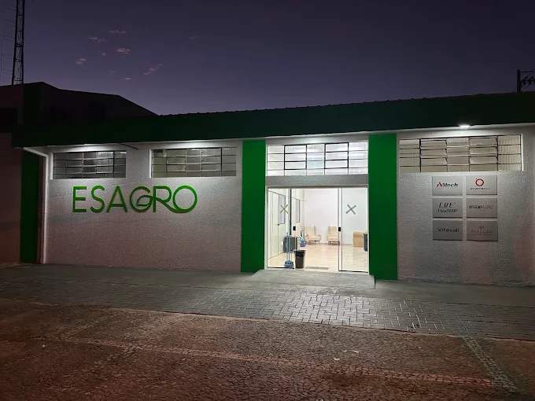
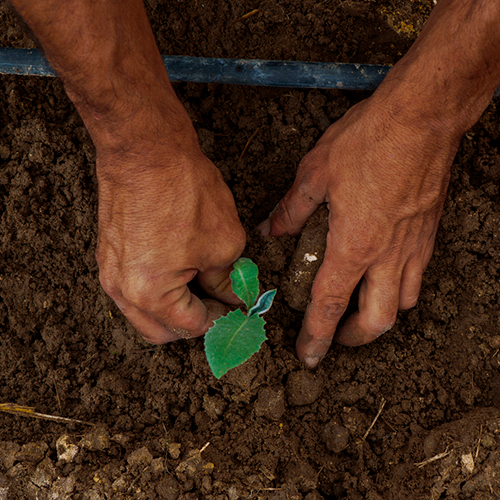
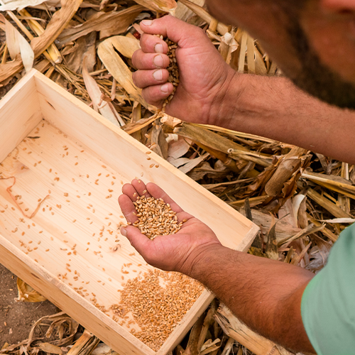
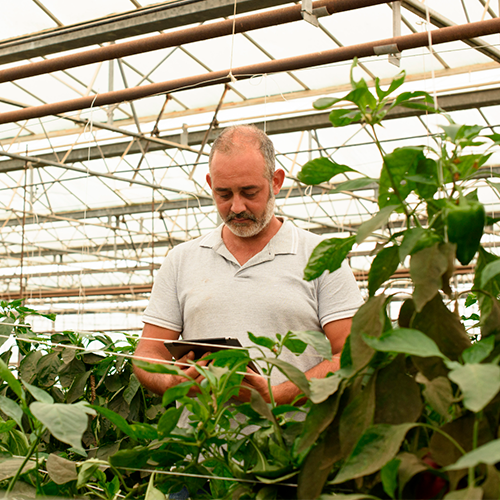
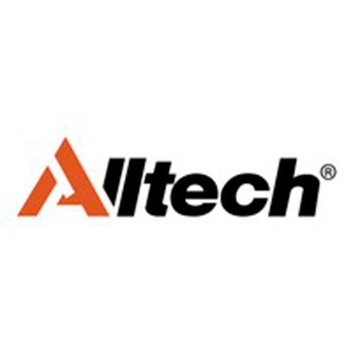
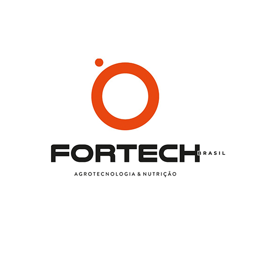
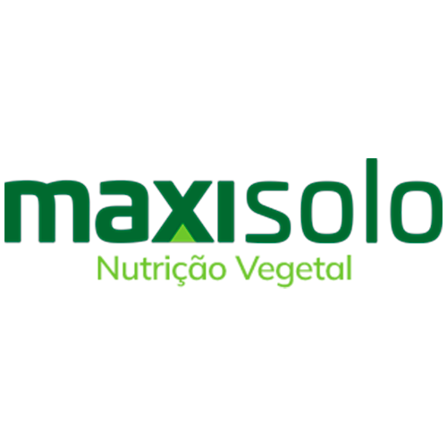
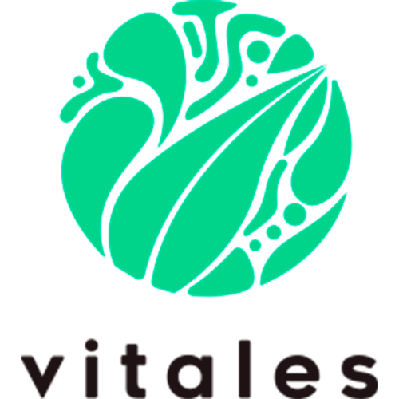
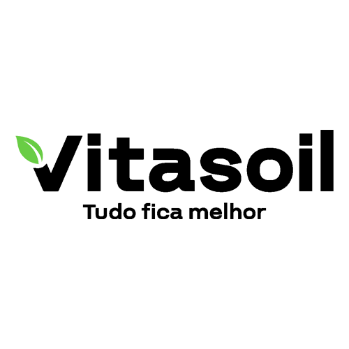

A ESAGRO é uma empresa comprometida em levar tecnologia, qualidade e eficiência ao campo. Atuando na região dos Campos Gerais, oferecemos soluções completas para produtores que buscam maior produtividade e resultados consistentes em suas lavouras.
Trabalhamos com um portfólio selecionado de fertilizantes, sementes e produtos para nutrição vegetal, sempre alinhados às mais modernas práticas do agronegócio. Nosso foco vai além da venda: buscamos entender a realidade de cada cliente para oferecer as melhores soluções de forma personalizada.
Com atendimento próximo e suporte técnico especializado, a ESAGRO se posiciona como uma parceira estratégica do produtor rural, contribuindo para o crescimento sustentável e o sucesso no campo.
Nossa atuação no campo é guiada por valores sólidos, visão de crescimento e uma missão clara: levar tecnologia, resultado e confiança ao produtor rural.

Entregar soluções inovadoras e sustentáveis para o agronegócio, gerando produtividade, rentabilidade e confiança para o produtor rural.

Ser referência nacional em fornecimento de insumos e tecnologias para o agro, reconhecida pela excelência no relacionamento e pelo impacto positivo no campo.

Confiança: Relações sólidas e transparentes com
clientes e parceiros..
Sustentabilidade: Compromisso com práticas que
preservem o futuro do agro.
Inovação: Soluções modernas para desafios atuais
e futuros do produtor.
Excelência: Qualidade em produtos, serviços e no
atendimento.
Parceria: Estar lado a lado com o cliente em cada
ciclo produtivo.




